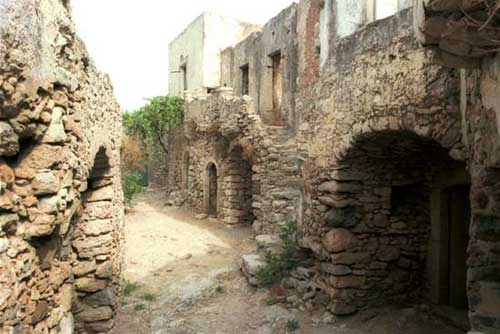

|

«Το Μυλοποταμίτικο
τ’ αγέρι να φυσούσε,
στην ξενιτιά που βρίσκομαι
να με παρηγορούσε…»
Την ανοιχτή θάλασσα στη δυτική πλευρά των Κυθήρων επόπτευε το βενετσιάνικο φρούριο του Μυλοποτάμου, που λόγω της θέσης του, στο κέντρο του νησιού, ήταν και το πιο ασφαλές. Το φρούριο προστάτευε τον οικισμό που σήμερα έχει το όνομα Κάτω Χώρα. Αν και ερειπωμένος και ακατοίκητος πλέον ο οικισμός, διατηρεί την αρχική του μορφή, τόσο στα σπίτια όσο και στις εκκλησίες που βρίσκονται στον περίβολο του κάστρου. Η περιοχή ονομάστηκε Μυλοπόταμος, γιατί είχε πολλούς νερόμυλους, εγκαταλειμμένους σήμερα, που κατά την Ενετοκρατία ανήκαν σε αρχοντικές οικογένειες. Τα σπίτια, μικρά και διώροφα μέσα στο κάστρο λόγω του περιορισμένου χώρου, μεγαλύτερα, αλλά με την ίδια αρχιτεκτονική, έξω από το αυτό, διατηρούν ελληνικές μορφές. Μεγάλες πέτρινες σκάλες και λιτές γραμμές, ενώνουν τους δύο ορόφους. Στο ισόγειο έχουν τους βοηθητικούς χώρους, στεγασμένους με κυλινδρικούς θόλους. Το λιοντάρι στην πύλη του φρουρίου θυμίζει την ιστορία της άλλοτε ισχυρής Δημοκρατίας του Αγίου Μάρκου ενώ η απόλυτη σιγή που επικρατεί στα ερείπια της Κάτω Χώρας μας ταξιδεύει στους θρύλους ακόμη πιο μακρινών, ξεχασμένων εποχών.
|
|